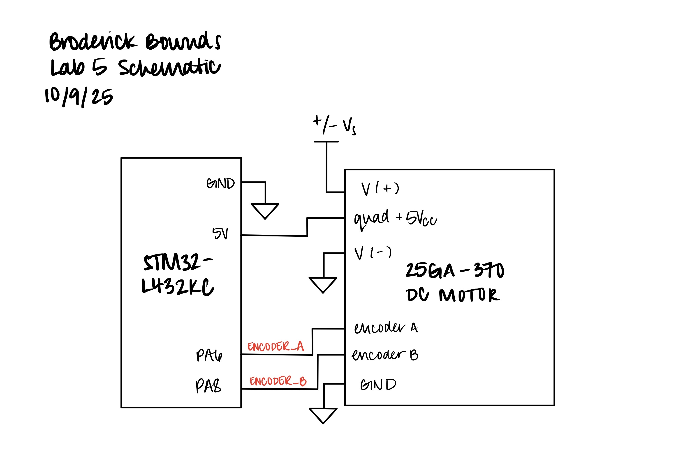
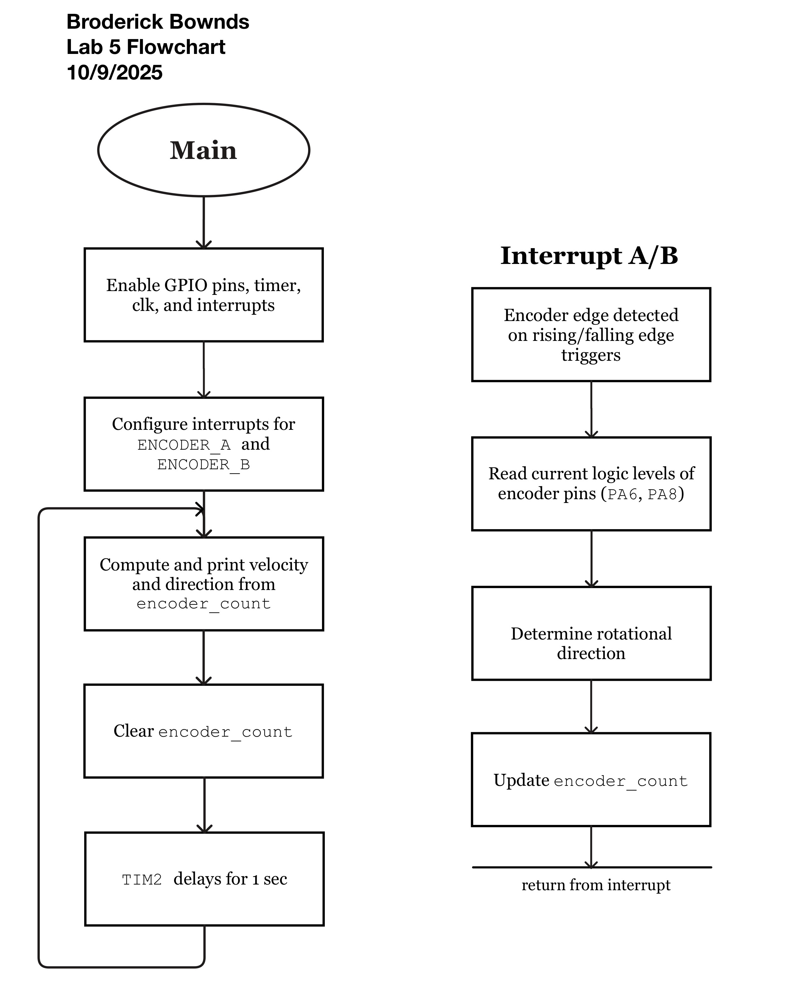
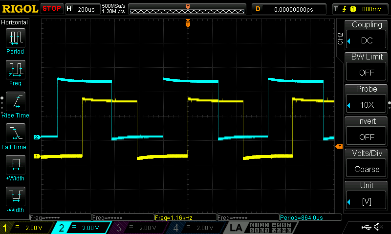
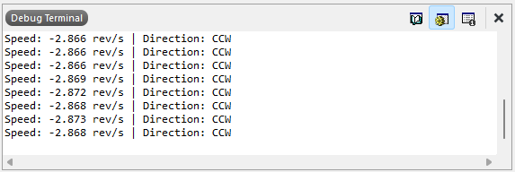
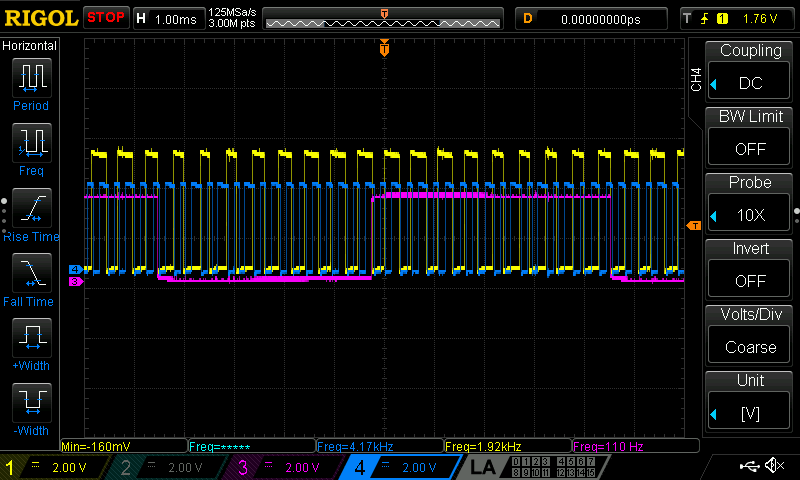

Interrupts
Introduction
In this lab, the STM32L432KC microcontroller was used to measure the angular speed and direction of a DC motor by interfacing with a quadrature encoder through hardware interrupts. A quadature encoder is a rotary encoder that produces two-square wave outputs (usually Channel A and Channel B) which are 90° out of phase with each other. Two 5 V-tolerant pins (PA6 and PA8) captured the encoder’s 90° out-of-phase signals, and the MCU was configured to trigger interrupts on both rising and falling edges to achieve full resolution. Each interrupt updated a counter that was used to calculate motor speed in revolutions per second (rev/s) and determine rotational direction, which were displayed on the Segger Studio terminal at a rate of 1Hz. A timer TIM2 provided consistent 1 Hz updates for velocity calculation and display.
Design and Testing Methodology
To implement the design, ENCODER_A and ENCODER_B were connected to pins PA6 and PA8, both configured as digital inputs with internal pull-downs to ensure clean signal transitions. The external interrupt (EXTI) peripheral was set to trigger on both rising and falling edges, enabling x4 edge detection for speed and direction measurement.
To validate system performance, two more GPIO pins were toggled—one in the main loop (polling) (PA4) and one inside the interrupt handler (PA5). This allowed the oscilloscope comparison of their response times. In the later section, I can confirm that interrupts captured every encoder edge while polling missed several transitions, especially at higher speeds.
Overall, this lab demonstrated how interrupts provide accurate, real-time measurement of high-speed encoder signals. The setup for calculating speed and determining roational direction is shown below.
Calculating Speed
In calculating the velocity we can convene to the TS-25GA370 Datasheet and see that at 12V, the pulses per revolution (PPR) at 408 meaning each full turn of the motor shaft produces 408 complete sqaure-waves cycles on Channel A (and Channel B).
Each pulse two two channels and two edges per channel (rising and falling), so there are four detectable rising and falling edges per pulse: \[ \text{edges per rev} = \text{PPR} \times\ 4 = 408 \times\ 4 = 1632 \]
The interrupt then detects on every edge of both A and B. Therefore, if the code counts all edges for one seconds, the raw counter give you edge per second. To convert into pulses per second (PPS) - divide by 4. Then to convert to revolutions per second (RPS), divide by PRR: \[ \text{rev/s} = \frac{\text{edges per second}}{4\times\ 408} \]
I can take the information and calculate the velocity of the motor at 12V rated at 150 RPM, \[ \text{rev/s} = \frac{\text{RPM}}{60\ \text{sec}} = \frac{150 \frac{rev}{min}}{60\ \text{sec}} = 2.5\ \text{rev/s} \]
Therefore, the calculated speed of the motor should about 2.5 rev/s at 12V.
Rotational Direction Logic
As previously stated, Channel A and Channel B are 90° out of phase. So as the motor shaft rotates, A and B take turns rising and falling. A table is shown how we determine clockwise and counter-clockwise rotation:
| Channel A | Channel B | Rotation (CW) |
|---|---|---|
| 0 | 0 | start |
| 1 | 0 | A rises first (CW) |
| 1 | 1 | B rises next (CWW) |
| 0 | 1 | A falls (CW) |
| 0 | 0 | B falls - back to start |
If motor spins clockwise A leads B and if counter-clockwise, B leads A.
Technical Documentation
The source code for the project can be found in the associated GitHub repository.
Schematic

Flowchart

Verifying Correct Motor Speeds
In verifying the DC motor speed we can take a oscilloscope trace of the measured the motor signal and check this against the calculated value from the motor’s datasheet.

As shown in Figure 3, the output period signal and can be used to back-calculate to find the measured DC motor speed: \[ T_{pulse} = 864.0\ \mu s\quad \Rightarrow \quad \frac{\text{1 pulse}}{T_{pulse}} = 1157.40\ \frac{\text{pulses}}{\text{sec}} \] \[ \frac{1157.41\ \frac{\text{pulses}}{\text{sec}}}{408 \frac{\text{pulses}}{\text{rev}}} = 2.837\ \text{rev/s} \]
From the calculated we can cross-reference with our actual values:

Therefore the speed error from the code and the measured oscilloscope is negilible. However the deviation speed from the datasheet and the measured are more significant possibly due to the motor speed itself fluctuating and not rotating at the same frequency.
Polling vs. Interrupts
In this section, it is shown that interrupts outperform polling when sampling at high speeds. To begin, polling means the CPU perodically checks if an input has changed. This check rate depends on the main loop speed and its delays. For example, if an encoder pulses between checks, it’ll miss it. Interrupts are event driven because the hardware triggers the MCU instantly when a change occurs. It pauses the CPU (main loop) to service the event. In simple terms interrupts detect every edge even at high frequency.

ENCODER, Blue = INTERRUPT, Pink = POLLINGNow this can be connected to the Nyquist-Shannon sampling theorem that says to accurately reconstruct a signal, you sample at twice its maximum frequency to also avoid aliasing and folding: \[ f_{s} > 2f_{max} \] For polling, as shown in the figure, the sampling frequency equals how often the loop reads the input. We clearly we that the encoder (yellow) produces a ~2 kHz and the polling pulse (pink) runs at 110 Hz, this is clearly below the Nyquist rate and therefore aliasing the rising/falling edges. The interrupt (blue) triggers at the signal’s edges themselves so Nyquist is never violated and there is no loss of data.
Conclusion
In this lab, I successfully used the STM32L432KC MCU to measure a motor’s angular velocity and direction using a quadrature encoder with hardware interrupts. By triggering on both edges of the A and B signals, the system achieved full resolution and calculated speed in rev per second. Comparing oscilloscope readings with code output confirmed that the interrupt-based approach captured every encoder edge, while polling missed transitions due to undersampling. Overall, this lab demonstrated how interrupts enable precise, real-time signal processing and reliable velocity measurement for high-speed systems. I spent approximately 19 hours completing this lab, including datasheet reading, code debugging, and oscilloscope testing.
AI Prototype Summary
Copilot helped me interface a quadrature encoder with the STM32L432KC and was a not-so-surprsing surprising experience. I asked for interrupt-based decoding, and Copilot immediately suggested using EXTI lines mapped to PA0 and PA1—pins that are straightforward to configure and well-supported by the STM32. The explanation was concise but thorough, walking through both the hardware setup and the software interrupt handlers. I appreciated how it didn’t just spit out code, but explained the reasoning behind the design choices, like why rising/falling edge detection is useful and how to interpret the encoder phase relationship.